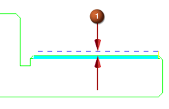

恒定选项将为各个刀路定义恒定的切削深度，如果值大于或等于总深度值，将生成一个切削刀路。
在刀轨设置的切削深度列表中，选择恒定。
在深度输入框中键入0.018。
在切削深度公差输入框中键入0.001。
点击非切削移动 。
在非切削移动对话框中，点击安全距离选项卡，在最小安全距离组中，注意最小安全距离值。
最小安全距离(1)为0.1000，这将在工件周围为刀具非切削运动建立一个安全区域。

点击确定。
螺距/导程 TPI